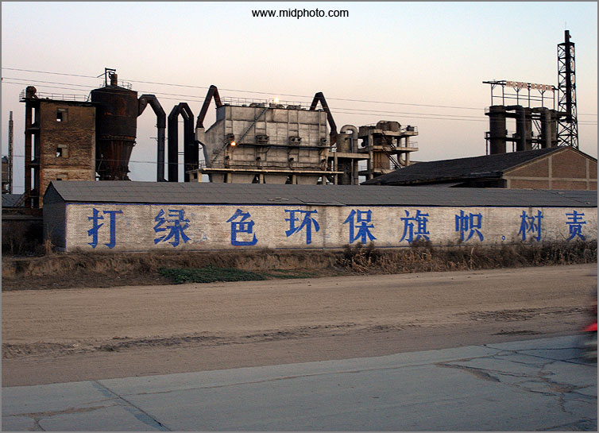
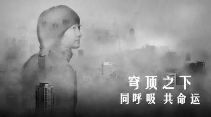

年终特稿|老羊视角：雾霾是个好事
长沙杨飞
最近中国大陆雾霾围城，大家又开始热烈讨论起来。雾霾致癌，人人恨之入骨，但它有时候也是个好事。请待我慢慢道来。
首先，雾霾意味着平等。无论是达官贵人还是平民百姓，出门都呼吸一样的空气。几千年来人们苦苦追求的这种平等精神，现在雾霾帮我们实现了。以前水污染、土壤污染，那都不平等，有钱人基本不受影响。
第二，雾霾并不立即致命，又让大家认识到了环境保护的重要性。我可能要更正一下，其实大多数人早就知道环保重要，空气质量很重要，但却无动于衷。自己发财最要紧，哪管身后洪水滔天。古希腊的亚里士多德曾总结了一个“公用品悲剧”，凡是公共用品一定没有好下场。家里的厕所都干净，但公共厕所永远最脏。这个世界最大的公用品就是空气，这东西是无论如何也无法私有化确定产权的，所以它悲剧了。
顺便说一句，其实雾霾还是比较容易对付的，真正难对付的是温室气体。所有的有毒污染物都相对容易搞定，包括雾霾，严格执法就是了。但是二氧化碳我们无论如何也搞不定，因为人类目前还在依靠石油和煤炭等化石能源，在可以预见的未来依然如此。这个话题明年另文讨论。
雾霾到底是怎么形成的，目前政府部门和专家正在吵架，但是有一点大家都同意：雾霾和重工业密切相关，尤其是钢铁、汽车、水泥、煤炭、电力等等工业。我们现在唯一争论的是它们各自所占的比例，比如汽车尾气到底是占雾霾的15%还是20%。我并不是说这种争论没有意义，科学的严谨精神是不能放弃的，但在争论的时候大多数人都在指责别人，指责政府管理不力、企业偷排偷放等等，唯独不说自己也有责任。这很不好。
现在中国的煤炭钢铁水泥等重工业的产值均为世界第一。企业不是傻子，有需求才有生产。每个人都在追求大房子和豪华汽车，重工业才突飞猛进。从这个角度来说，人人都是雾霾的推手。拥有大房子和大排量汽车的人尤其需要反思自己。

河北内丘县，2008年11月18日。污染严重的重工业企业也竖起了绿色环保旗帜。选自我的107国道北京至深圳图片专题。此次我独自骑行31天，行程2700公里
第三，雾霾让大家充分认识到人性之恶。“公用品悲剧”的潜台词就是人性本恶。我们之所以引进政府这样一个强制工具，就是为了制止有人坑蒙拐骗，为了私利不惜损害公共利益。比如中国的大型火电厂按法规都得安装除尘脱硫设备，但是不少电厂为了省钱，很多时候都把脱硫设备给关了。钢铁厂、造纸厂和水泥厂都这么干，雾霾不来才怪了。
也许有人要问，政府在哪里？难道就没人来管一管这些无法无天的企业吗？说得对，但是中国很不幸，有一个较为腐败的政府机构，环保机构形同虚设。广东某市环保局长不是被人录音了吗：我分分钟可以让你破产。意思是说，不送钱来就判你环保不合格，立即关门停产。送钱来，啥都好说，随便你排污。全国各地的环保官员都大同小异。这么搞下去，雾霾不来才怪了。
综上所述，雾霾围城，个人、企业和政府三方都有责任。重要的事说三遍：个人、企业和政府都有责任。个人、企业和政府都有责任。个人、企业和政府都有责任！
所以，要解决雾霾问题需要三方一起努力。首先来看个人。既然雾霾和大家追求大房子和大汽车有关系，有啥办法让大家不追求这个吗？理论上当然可以，美国的几十万阿米绪人正是这么做的，他们不使用任何用电的东西，包括手机和汽车。但阿米绪人有宗教信仰的支撑。这个我们比不了。我们信仰的是钱，谁的汽车排量大谁就光荣。
要改变这种情况，唯一的希望在于教育。整个社会要形成一种“够用就好、少用光荣”的价值观。要减少工业产出，改变整个社会的价值取向，要让孩子们一看到八缸大排量汽车，第一反应是他们家污染环境太多，而不是像现在这样觉得他们家是成功人士。但是这难度非常大，需要一种类似宗教的力量才行。
很难做到并不代表不去做。我们每个人都要从自己做起，从小事做起。少开汽车，多走路或者骑车。我自己正是这么干的，我的汽车只是做家里急事备用，一个星期都很难发动一次。为了宣传单车出行，2012年夏天我拼了老命，自费拍摄了自行车纪录片《老杨的川藏线》。我还经常劝说朋友们别买奢侈品，多追求精神财富，少追求物质财富。但我们不能指望每个人都愿意当环保活雷锋。
既然个人很难改变，那企业改变的可能性要大一点？我觉得同样难。资本的最大特点是唯利是图，要企业家少赚钱，等于要他们的命。当然，也有一些不纯粹为了赚钱的企业，比如谷歌就把“不作恶”作为其企业文化最重要的一部分，它认为政府有些管理是作恶，所以拒绝服从，但谷歌很不幸地死在了中国。
在中国企业界，不作恶、讲良心、讲诚信、不行贿受贿，那就很难发展。当大多数厂家都在贿赂官员、肆意排放的时候，少数坚持按环保法规处理废水废气的企业就处境艰难，因为生产成本降不下来。总而言之，中国的某些制度（及其执行者）正在逼良为娼，劣币正在驱逐良币，导致了大量没有社会责任感的无良企业茁壮成长。
如果没有一套更好的制度，并有效地执行，企业是不会真正有所改变的。那驱逐雾霾的最大责任就落到政府头上了。确实是这样，政府是这个国家的管理者，现在环境搞成这样，实属其管理不力。根治雾霾，我们必须要有一个廉洁奉公，严格执法的政府。现在中国正在大规模反腐，但是别高兴得太早。问一个问题：你能自己监督自己吗？左手监督右手行不行？
如果做不到，有啥别的办法吗？如果要说根本方法，应该参照英国经验主义哲学家约翰洛克（John
Locke）的理论。洛克认为人类本来可以不需要国家和政府，每个人都是独立和自由的个体，但是在出现私有财产之后，总有些人不那么自觉，为了自己赚钱，不惜侵犯别人的利益。所以，人们只得放弃一部分自由，通过契约的方式委托某些人（或某团体，即政党）组成政府，赋予其强制权，维护社会的公平与正义。这就是国家和政府的起源。当政府违背了契约，威胁到人们的生命、自由和财产等自然权利时，人们有权抛弃现政府，建立一个遵守契约的新政府。
组建政府，这本身就意味着人性本恶。若是人性本善，我们根本就不要国家，也不需要政府。政府是由党派所组建，所谓党派，乃是一种群众性组织，通俗讲就是几个人组成的团伙。既然人性本恶，那几个人联合组建的团伙也同样可能作恶，他们可能打着为人民服务的旗帜，实际上是为人民币服务，为自己谋利，坑害大众。我前面说的广东那些环保官员正是这么干的。
雾霾乃是国难，它威胁到了国人的健康和生命。可又能怎么样呢？中国政府不遵守契约的事太多了。本来说了一个孩子好，国家来养老，现在不但不算数，还要延迟退休；本来说了绝不走资本主义国家先污染再治理的老路，现在面对雾霾谁都不说话了；本来油价说好了同步调整的，现在就是不下调，还说是治理雾霾的需要。这理由相当雷人。
虽然政府屡屡失约，但是我们现在走的是中国特色社会主义道路，与洛克的道路完全不挨边。实在要牵强一点的话，中国也可以说符合洛克的政府契约论，只不过我们中国特色的契约是这样写的：不论本政府管理如何糟糕，本合同永远不得取消。
中国政府现在把维护这种霸王合同放在了最首要的位置，其他的一切都在其次，包括有毒食品问题，包括水污染和土壤污染，也包括本文所谈的雾霾。也许你不同意我的说法，但是我可以再举一个例子。面对雾霾围城，民间人士也行动起来了。2015年2月28日，有一个叫柴静的小妹上传了一个她自己拍的纪录片《穹顶之下》，讲述了她本人对雾霾的看法。这个片子创下了全国纪录，一周之内点击播放超过一亿次，然后就没有然后了。从2015年3月7日晚上开始，全国所有的视频网站统一下架了《穹顶之下》，现在中国人要看这个片子只能想办去国外网站。

柴静纪录片
《穹顶之下》当然有瑕疵，比如柴静的孩子的病和雾霾是否有直接联系，她并没有严格论证；柴静建议的雾霾解决方案我本人也不十分赞同，中国至少目前是离不开煤炭的，研究煤炭清洁发电应该更为靠谱。但《穹顶之下》总体来说是一个制作严谨的片子，它至少提起了公众对雾霾的重视，是一件好事。
好事归好事，但《穹顶之下》在全国广泛传播之后，公众自然会一起来追究雾霾围城的深层原因。中国政府最怕自己被广泛质疑，因为这有可能动摇其执政的基础。查封《穹顶之下》就是理所当然的了。一句话，虽然治理雾霾很重要，但是维护稳定更为重要。
我个人认为，这就是雾霾最大的好处。它帮助我们认识了人性之恶以及政府的本质。美国国父和《独立宣言》起草人之一的托马斯杰弗逊说过：“尘世中所有的政府都有人类弱点的印记，都有腐化和堕落的胚芽，其狡诈会显露，其邪恶会逐渐展现、蓄积和增强。。。”因此，“信赖我们自己选择的人，认为他会为我们的权力保障代言，这将是一种危险的幻想。”
因为要和家人庆祝新年，我就不再啰嗦了。我想把这篇文章献给我的妻子小修。2015年我们俩成功制造了新的生命，儿子现在四个半月大，可爱得要死。感谢小修在坚持研究生学业的同时还负担了大部分照顾孩子的重任。虽然我没有像子怡和柴静那样把孩子落户去外国，但我希望我的孩子今后在中国一样能呼吸到干净的空气。这也是我半夜起来扒拉这些文字的原因。
杨飞，
3月2日于新加坡，
12月30日改于长沙
关注老杨
杨飞作品集：www.midphoto.com
微信：yangfei789288
微信公众号：老杨书吧
新浪微博@长沙杨飞
推特Twitter@feiyang17
Facebook：yangfei999999@hotmail.com